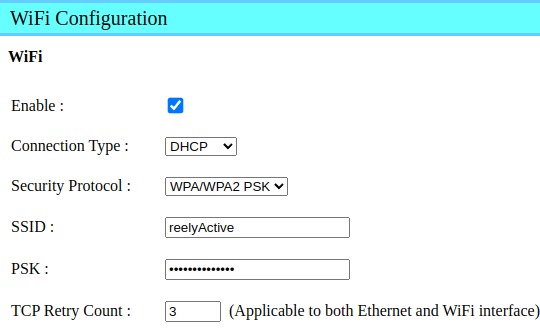
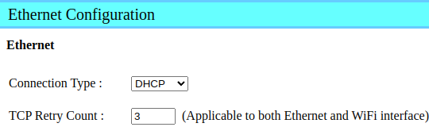

Configure a CSL CS463 Reader
Our step-by-step guide to configure the reader to run Pareto Anywhere.

The TL;DR (Too Long; Didn't Read)
Learn how we at reelyActive configure the readers to make any physical space context-aware
- What will this accomplish?
- The CS463 will collect ambient RAIN RFID decodings to be processed locally—on the reader itself—by Pareto Anywhere.
- What's Pareto Anywhere?
- Pareto Anywhere is open source middleware that makes sense of who/what is where/how, in any physical space, in real time.
- Why run locally?
- The CS463 is a Linux-powered edge server which allows custom applications to run standalone, without the need for cloud or network connectivity.
Prerequisites
A CSL CS463 reader.

Configure network Step 1 of 5
Connect to the CS463 to configure its network settings.
- How to power?
- The CS463 is powered via PoE (Power over Ethernet), or from a DC supply which is likely provided.
- How to connect?
- The CS463 accepts connections over the Ethernet and/or WiFi network to which it is connected
Connect to the CS463 Part 1
Connect the CS463 to your computer with a network cable and then:
- apply power to the reader via the DC supply
- set your computer's Ethernet interface to the static IP address 192.168.25.100
- after the reader boots 3 min browse to the reader at 192.168.25.160
- log in to the reader with user root and password csl
Configure Cloud Server Part 2
After logging in, from the left menu, select Network | Cloud Server | Add Cloud Server and enter the following configuration:
| Parameter | Value |
|---|---|
| Server ID | Pareto Anywhere (local) |
| Description | Pareto Anywhere open source middleware running on the CS463 itself |
| Protocol | HTTP |
| Path | http://127.0.0.1:3001/csl |
Click Add to save the configuration.
From the left menu, select Network | Cloud Server | Configuration, disable the Buffer Undeliverable Tag Data option* and then click Modify to save the configuration.
* this prevents stale data from being unnecessarily forwarded to the real-time middleware
Configure WiFi or Ethernet connectivity Part 3
The reader will require an Internet connection to install the middleware and its dependencies.
Configure either a WiFi or Ethernet connection, as below, ensuring that the computer can connect to the same network to complete the configuration.
From the left menu, select Network | WiFi Configuration and enter the WiFi credentials specific to your network, similar to the screenshot below.
Click Set to save the configuration. The CS463 will automatically initiate the connection.
From the left menu, select Status and scroll down to the Network Setting section. Note the WiFi IP address that has been assigned to the reader, as this will be required in Step 2 below.
From the left menu, select Network | Ethernet Configuration and enter the configuration specific to your network, similar to the screenshot below.
Click Set to save the configuration. The CS463 will adopt the new configuration on the next power cycle.
From the left menu, select Users | Logout, disconnect the network cable connecting your computer to the reader, and proceed to Step 2 below.
If the Ethernet option was selected above, connect the reader to the network and perform a power cycle.
Install packages Step 2 of 5
Install Node.js, Pareto Anywhere and Node-RED from online repositories.
- Why Node.js?
- Explain.
- Why Node-RED?
- Explain.

Connect to the CS463 over the network Part 1
With your computer and the reader on the same network, complete the following:
- Open a terminal on the computer and SSH into the reader with the command
ssh root@xxx.xxx.xxx.xxxreplacing the x values with the reader's new IP address on the network - When prompted enter the password (csl by default)
If you're still using the default password, this is as good a time as any to change it via the web interface.
Add the CSL package repository Part 2
From the same terminal , open a new file for editing with the command sudo nano /etc/yum.repos.d/csl-remote-repo.repo and paste in the following contents:
[cslrepo] name=CSL Intelligent Reader Repository baseurl=http://repos01.convergence.com.hk/repo enabled=1 gpgcheck=0
Save the file with Ctrl+X and y.
Update the reader's repositories with the command dnf -v repolist all
Install Node.js and Node-RED Part 3
From the same terminal , complete the following:
- install Node.js with the command
sudo dnf install node - install Node-RED with the command
sudo npm install -g --unsafe-perm node-red
Install Pareto Anywhere Part 4
First create a reelyActive folder under the home folder.
- Create (if it does not already exist) a reelyActive folder with the command
mkdir ~/reelyActive - Change to the reelyActive folder with the command
cd ~/reelyActive
Next, install Pareto Anywhere under this folder.
- Clone the pareto-anywhere repository and submodules from our GitHub with the command
git clone --recurse-submodules https://github.com/reelyactive/pareto-anywhere.git - Change to the pareto-anywhere folder with the command
cd pareto-anywhere - Install all package dependencies from npm with the command
npm install5 mins
It is possible that some dependencies produce warnings or errors. Do not despair: in most cases these have no impact on functionality.
Configure events Step 3 of 5
Read tags and relay the data to Pareto Anywhere.
- What?
- Explain.
- What?
- Explain.
From your computer browse to the reader (by entering its IP address on the network) and log in to complete the configuration using the web interface.
Add Resultant Action Part 1
From the left menu, select Events | Resultant Action | Add Resultant Action and enter the following configuration:
| Parameter | Value |
|---|---|
| Resultant Action ID | Send to Pareto Anywhere (local) |
| Description | Relay data to Pareto Anywhere open source middleware running on the CS463 itself |
| Condition | None |
| Action Mode | Low Latency Alert to Server |
| Transport Type | HTTP POST |
| Server ID | Pareto Anywhere (local) |
| Data Format ID | Example Tag Upload to Cloud Server Data Format |
Click Add to save the action.
Edit Default Event Part 2
From the left menu, select Events | Event Management | List Event and select Default Event from the Event Table. Update the configuration by changing the Resultant Action and selecting Event Enabled as follows:
| Parameter | Value |
|---|---|
| Event ID | Default Event |
| Description | Ex Factory Default Event |
| Operation Profile | Default Profile |
| Exclusivity | Non-exclusive |
| Tag Duplicate Elimination Window | 6 seconds |
| Tag Duplicate Eliminate Antenna Differentiation | Disabled |
| Inventory Enabling Trigger | Always On |
| Inventory Enabling Action | None THEN None |
| Trigger Logic | Read Any Tags |
| Resultant Action | Send to Pareto Anywhere (local) THEN None |
| Inventory Disabling Trigger | Never Stop |
| Inventory Disabling Action | None THEN None |
| Event Enabled | Enabled |
Click Modify to save the event configuration.
Edit Operation Profile (OPTIONAL) Part 3
The Default Profile for operation will read tags on Antenna Port 1 only: edit the profile as required.
From the left menu, select System | Operation Profile | List Profile and select Default Profile from the Operation Profile table.
If the only modification is to add Antenna Ports as Capture Points, then it is reasonable to simply update the Default Profile.
However, if additional modifications are required, we recommend creating a new Operation Profile. After creating a new profile, repeat Part 2 above for the Default Event to use the newly created Operation Profile.
Observe data Step 4 of 5
Run Pareto Anywhere and Node-RED to observe tag data.
- What?
- Explain.
- What?
- Explain.
Enjoy the real-time data stream
Our cheatsheet details the raddec JSON output from the Pareto Anywhere open source middleware.
-

-
Developers Cheatsheet
"Owl" you need to know about Pareto Anywhere's core data structures.
Automatically run on boot Step 5 of 5
Configure a systemd service to run Pareto Anywhere and Node-RED each time the CS463 boots.
- What?
- Explain.
- What?
- Explain.


Tutorial prepared with ♥ by jeffyactive.
You can reelyActive's open source efforts directly by contributing code & docs, collectively by sharing across your network, and commercially through our packages.Where to next?
Continue exploring our open architecture and all its applications.
-

-
Directory of Devices
Browse all device configuration tutorials and development guides.
-

-
reelyActive Developers
Browse all developer documentation and tutorials.
-

-
reelyActive
Let's put things in context, one space at a time.